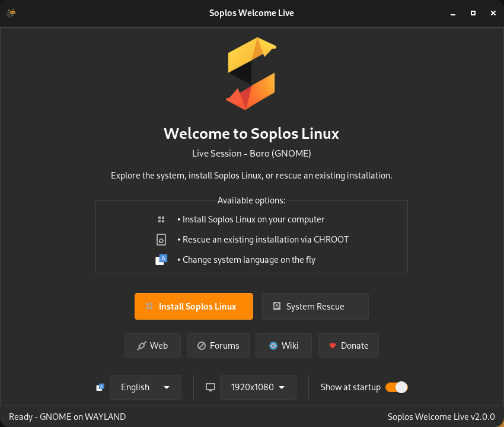
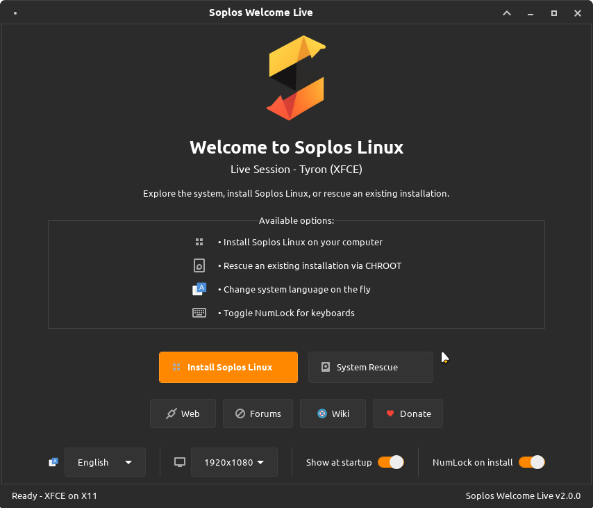
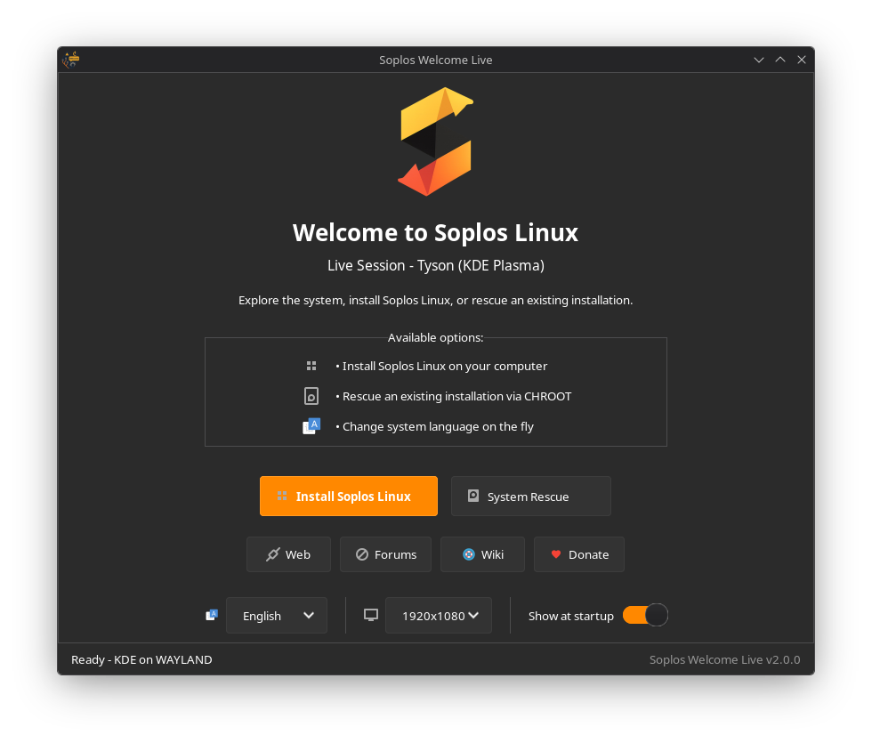

ES
ES FR
FR PT
PT DE
DE IT
IT RO
RO RU
RUOverview
Soplos Welcome Live 2.0 is a modular GTK3 application that serves as the central hub during a Soplos Linux Live session. From a single interface you can launch the Calamares installer, enter a full CHROOT recovery environment with BTRFS subvolume support, or adjust the system language and screen resolution — all without opening a terminal.
Built on the same universal architecture as Soplos Welcome 2.0, it auto-detects the running desktop environment (XFCE, KDE Plasma, GNOME) and display protocol (X11, Wayland) to adapt its behavior, terminal selection, and window integration accordingly.
Key Features
- Calamares Installer: Launch the system installation directly from the welcome screen with automatic locale detection and privilege management.
- CHROOT Recovery Engine: Enter a professional recovery environment with intelligent partition detection, full BTRFS subvolume support, automatic mount-point suggestions, and cross-desktop terminal selection (kitty, konsole, gnome-terminal, and more).
- Live Language Switching: Change the system language on the fly with automatic keyboard layout reconfiguration and screen resolution persistence across session restarts.
- XDG Folder Migration: Automatically renames user directories (Documents, Downloads, Music, etc.) to match the newly selected locale.
- Display Resolution Manager: Adjust and persist screen resolution changes for both X11 (autostart script) and Wayland (D-Bus ApplyMonitorsConfig) sessions.
- GParted Integration: One-click access to the GParted disk editor for partition creation, resizing, and formatting before installation.
Screenshots


